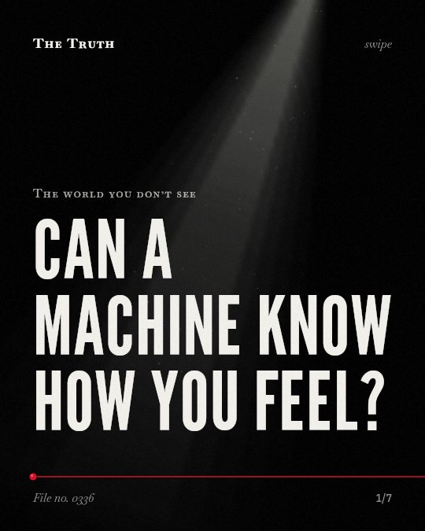

The world you don’t see
Can a machine know how you feel?

Systems can recognize your emotions from your heart and brain.
Affective computing can automatically identify your emotional states by analyzing neural and cardiac dynamics. This technology is capable of recognizing and forecasting your feelings.
Established. Several studies combined, or official data. The evidence is mixed.
What the research found
A model using brain and heartbeat signals could predict a subject's arousal with 75.00% accuracy and valence with 71.21% accuracy.
“The model's accuracy was 75. 00% along the arousal dimension and 71. 21% along the valence dimension.”
Experiment, 2018. Marín‐Morales et al., Scientific Reports.
Affective computing systems can automatically recognize emotions from neural and cardiac dynamics.
“Our findings validate the use of Immersive Virtual Environments to elicit and automatically recognize different emotional states from neural and cardiac dynamics”
Experiment, 2018. Marín‐Morales et al., Scientific Reports.
Wearable devices can be used to collect data for sentiment analysis and forecasting models.
“collaborative data collection via wearable devices, enhanced sentiment analysis and forecasting models, and controllable affective interactions.”
Study, 2015. Chen et al., IEEE Wireless Communications.
Wearable device data used for research can have intrinsic data quality challenges.
“Our study identifies potential intrinsic data quality challenges that could occur when analyzing wearable device data for research”
Systematic review, 2021. Cho et al., JMIR mhealth and uhealth.
Automatic emotion recognition systems have implications for privacy.
“Special attention is made to the implications of AER on privacy and social groups.”
Experiment, 2022. Mohammad, Computational Linguistics.
Wearables collect data to map your internal states.
Wearable devices gather data for sentiment analysis and forecasting models. While this technology exists, the data quality from personal wearables faces intrinsic challenges. These systems also have significant implications for your privacy.
Your internal reactions are becoming data points.
That may be why your biological responses are no longer private. Your heartbeat and brain signals could be interpreted as a map of your feelings, regardless of what you say.
This part is our reading of the evidence, not a finding.
A pulse quickens in a meeting.
You sit in a chair. You feel a slight tension in your chest. A sensor on your wrist records the shift in your heart rate and neural activity as you listen to a coworker speak.
The honest summary
The evidence confirms that wearable technology can be used to recognize and forecast emotions, but it also highlights significant hurdles regarding data reliability and ethical privacy implications.
The sources do not provide specific evidence that these records are currently being stored as a 'permanent' record, only that the technology exists to recognize and analyze these states.
Who owns the record of your feelings?
Sources
- Javier Marín‐Morales, Juan Luis Higuera-Trujillo, Alberto Greco et al. (2018). Affective computing in virtual reality: emotion recognition from brain and heartbeat dynamics using wearable sensors. Scientific Reports. Experiment, cited 473 times.
- Sylvia Cho, Ipek Ensari, Chunhua Weng et al. (2021). Factors Affecting the Quality of Person-Generated Wearable Device Data and Associated Challenges: Rapid Systematic Review. JMIR mhealth and uhealth. Systematic review, cited 154 times.
- Min Chen, Yin Zhang⋆, Yong Li et al. (2015). AIWAC: affective interaction through wearable computing and cloud technology. IEEE Wireless Communications. Study, cited 180 times.
- Saif M. Mohammad (2022). Ethics Sheet for Automatic Emotion Recognition and Sentiment Analysis. Computational Linguistics. Experiment, cited 225 times.
Also read for this file, not quoted
- D’Mello et al. (2017). The Affective Computing Approach to Affect Measurement.
- Machajdik et al. (2011). Affective computing for wearable diary and lifelogging systems: An overview.
This file was researched and drafted by software, then checked by rules a model cannot talk its way around: each quote above was matched word for word against the paper, and every number had to appear in it. How files are made.